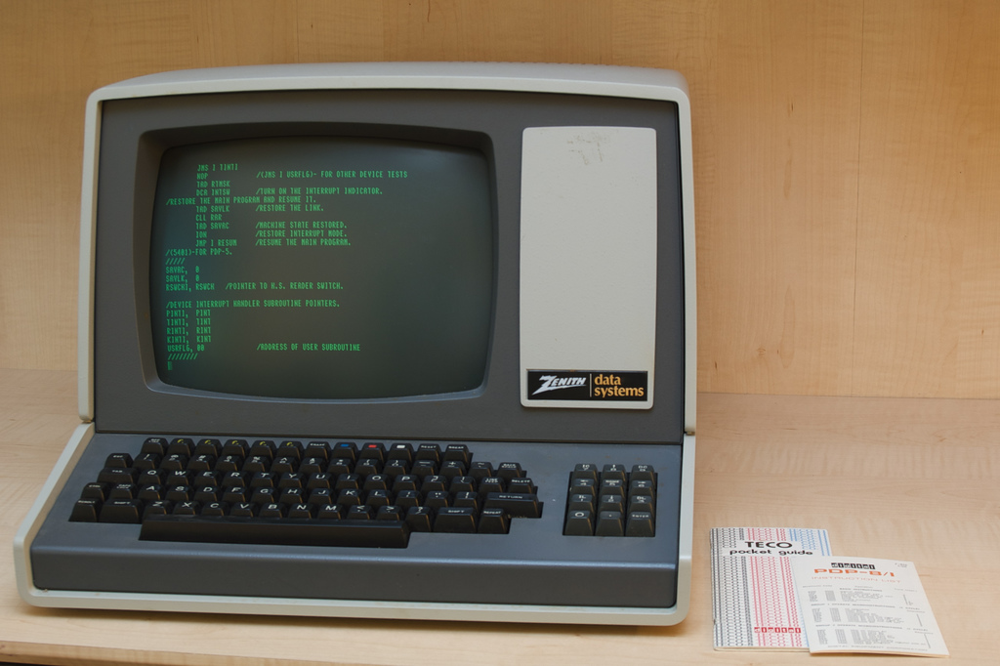
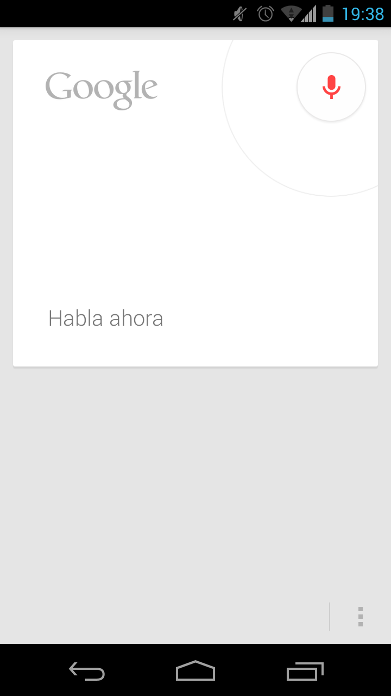
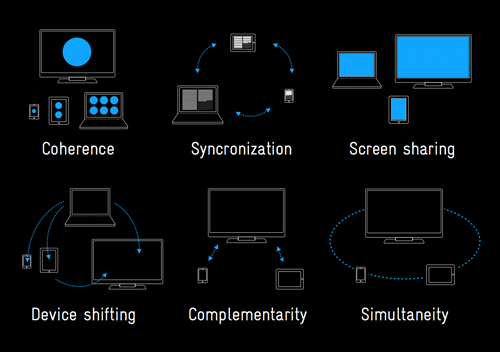
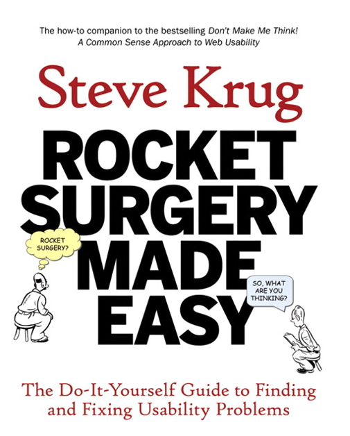

El diseño centrado en el usuario
Experiencia de Usuario en Aplicaciones Móviles
A diario interactuamos con nuestro entorno
En ocasiones estas interacciones nos generan frustración

Otras veces nos hacen la vida más fácil

Un botón como “comprar sin registrarse” supuso unos beneficios de 300 millones de dólares
Un estudio de usabilidad permitió detectar que el 75% de los usuarios que habían olvidado su contraseña y solicitaban su envío, nunca completaban la compra.
Leer artículo completo¿Qué es el diseño de Interacción?
La práctica de diseñar productos digitales, entornos, sistemas, y servicios interactivos.
It's not just what it looks like and feels like. Design is how it works.Steve Jobs
Design is practical imagination: Imagine possibilities and making them real.Matias Duarte
Design is conceiving and giving form to artifacts that solve problemsKarl T. Ulrich
We are tool makers [...] the products that we made are augmentations of our abilities as humans. When the augmentation really works, then, the extension of yourself feels natural.Blaise Agüera y Arcas
¿Cuando obtenemos una experiencia de usuario satisfactoria?
Los 10 principios de Dieter Rams
El buen diseño...
- Es innovador
- Hace útil un producto
- Es estético
- Hace un producto comprensible
- Es discreto
- Es honesto
- Tiene un valor duradero
- Es consecuente hasta el último detalle
- Respeta el medio ambiente
- Es diseño en su absoluta mínima expresión

No me hagas pensar
Es la 1ª norma de usabilidad de Steve Krug.
Los usuarios no leen linea por linea. Escanean el contenido.
Los usuarios tomarán la primera vía razonable.
Nadie va a leer las instrucciones

¿No podría el ordenador dedicar un par de ciclos de CPU a eliminar puntos y letras?
¿Porqué no es sencillo?
Muchos factores que contribuyen a la experiencia de usuario

Los usuarios no saben decirte lo que necesitan
Los intereses de la organización vs. las necesidades del usuario

El diseño centrado en el usuario
Un cambio de perspectiva y un proceso
El producto es la interfaz
Debemos abandonar el diseño dirigido por la tecnología, y poner la tecnología al servicio de los usuarios.
Ambos permiten lavarte las manos
Diseño dirigido por la tecnología

Diseño centrado en el usuario

Diseño centrado en el usuario

- Entender las necesidades desde el punto de vista del usuario
- Explorar ideas
- Comunicar las soluciones
- Probar con usuarios
El diseño es cada vez más importante
Antes
Ahora

Cada vez más empresas se toman el diseño en serio
Apple
Equipo de diseño de twitter
5 diseñadores en 2009, 40 en 2012
Microsoft ha adoptado el lenguaje de diseño que creó para su experiencia movil
Pruebas de usabilidad en Microsoft
La importancia del diseño en Google
Actividad: Piensa en ejemplos
- Piensa en una interacción positiva con un producto o servicio*
- Piensa en una mala interacción (frustración, perdida de tiempo...)
Para cada interacción:
- ¿Para quien está pensado el producto? (¿y para quien no?)
- ¿Que problema resuelve?
- ¿Que se podría mejorar?

The simple guideline is whatever you are doing, do mobile firstEric Schmidt
Crecimiento sin precedentes
- El número de ventas de dispositivos móviles superó al de PCs en 2010 (dos años antes de las previsiones).
- En 2010 el tráfico web desde dispositivos móviles aumentó un 600%.
- En Noviembre el acceso a correo descendió en escritorio (-6%) y aumentó en móviles (36%).
Limitaciones
Tamaño de pantalla

- El cambio de desktop a movil supone perder el 80% del espacio.
- El tamaño reducido obliga acentrarse en lo esencial (por suete hay mucho contenido irrelevante a eliminar.)
Rendimiento

- Las limitaciones de las redes móviles exigen intensificar esfuerzos en optimización de rendimiento (reducir número y tamaño de las descargas).
- La inmediatez del contexto en el que se usa el móvil requiere un tiempo de respuesta rápido.
Atención del usuario
- Los móviles se usan en situaciones, lugares y momentos muy dispares...
- ...muchos de ellos con atención dispersa ("un ojo y un pulgar").
- El acceso se realiza muchas veces a rafagas.
Nuevas posibilidades
Localización espacial
Orientación del dispositivo

Capacidad multitáctil

Análisis y síntesis de voz
Auto-ID: códigos de barras, QR, RFID...

Usos multi-dispositivo
Actividad: Participa en una comunidad on-line
- Crea un usuario en User Experience Stack Exchange: http://ux.stackexchange.com/
- Busca preguntas interesantes y lee sus respuestas.
- Vota las mejores respuestas y aporta las tuyas.
Actividad: Elige ideas de proyecto
Describe como imaginas el uso del producto y su interfaz
Comunidad para compartir recetas
Asistente en el aeropuerto
Mientras ves el partido
¿Dónde he aparcado?

Organizador de imágenes
Organizador de "pachangas"
Controlador para presentaciones
Información transporte público
Asistente tienda de ropa
Aplicación de traducción
Lector de noticias
Aplicación de videoconferencia
Reproductor de música
...o propón tu propia idea basada en:
- Otras asignaturas del máster
- Tus intereses/investigación
- Proyectos Open Source en los que te gustaría participar
Material relacionado
Libros
About Face 3
Alan Cooper, Robert reimann, and David Cronin. Willey, 2007.

Don't make me think
Steve Krug. New Riders 2005.
Rocket Surgery Made Easy
Steve Krug. New Riders 2010.
Design: Creation of artifacts in society.
Karl T. Ulrich, 2005.
Disponible en: http://opim.wharton.upenn.edu/~ulrich/designbook.html
100 Things Every Designer Needs To Know About People
Susan M. Weinschenk. New Riders 2011
Mobile first
Luke Wroblewski. A Book Apart 2011

Bright Ideas for User Experience Designers
David Travis. Userfocus 2012

Disponible en: http://www.userfocus.co.uk/ebooks/uxdesign.html
Catálogo de Rosenfeld Media
Comunidades on-line
- User Experience en StackExchange. Web de preguntas y respuestas sobre usabilidad, IxD, UX, etc...
- IxDA: Interaction Design Association. Asociación de diseñadores de interacción.
- Dribble. Comunidad dónde diseñadores comparten su trabajo.